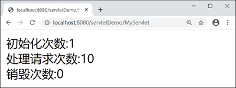
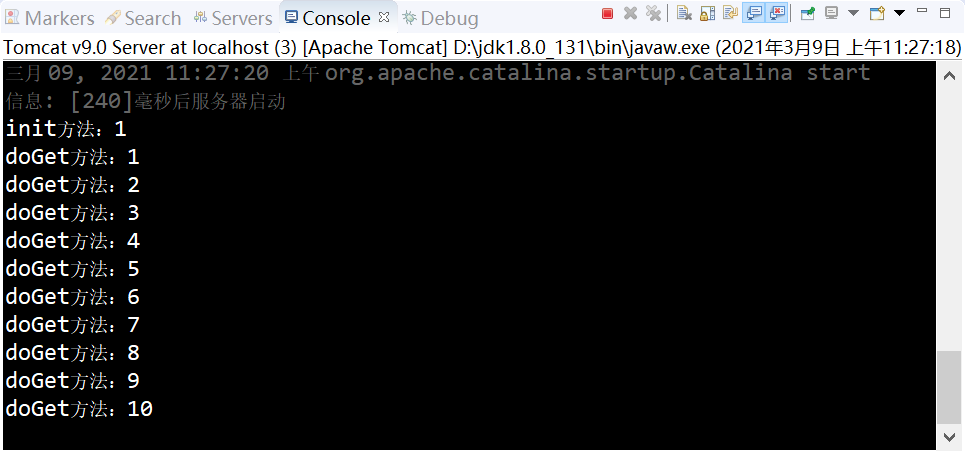
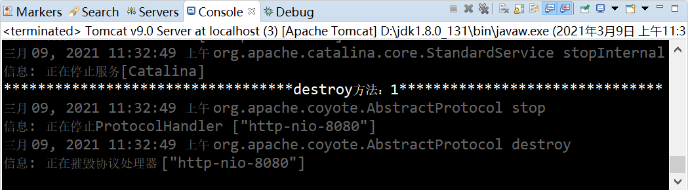

Servlet生命周期（附带实例）
生命周期是指事物从创建到毁灭的过程。人的生命周期就是从出生到死亡的过程，在这个过程中，必定会有一些与生命周期息息相关的事件，如：出生、吃饭、上学、死亡等。这些事件会在生命周期中的某个特定时刻发生。
Servlet 也有生命周期，Servlet 的生命周期就是 Servlet 从创建到销毁的过程。Servlet 的生命周期由 Servlet 容器管理，主要分为以下 3 个阶段。
在 javax.servlet.Servlet 接口中定义了 3 个方法：init()、service()、destory()，它们分别在 Servlet 生命周期的不同阶段被 Servlet 容器调用。
Servlet 初始化阶段分为 2 步：
初始化的目的：让 Servlet 实例在处理请求之前完成一些初始化工作，例如建立数据库连接，获取配置信息等。
在 Servlet 的整个生命周期内，init() 方法只能被调用一次。
初始化期间，Servlet 实例可以通过 ServletConfig 对象获取在 web.xml 或者 @WebServlet 中配置的初始化参数。
这里需要注意的是，执行 service() 方法前，init() 方法必须已成功执行。
在 service() 方法中，Servlet 通过 ServletRequst 对象获取客户端的相关信息和请求信息。在请求处理完成后，通过 ServletResponse 对象将响应信息进行包装，返回给客户端。当 Servlet 容器将响应信息返回给客户端后，ServletRequst 对象与 ServletResponse 对象就会被销毁。
在 Servlet 的整个生命周期内，对于 Servlet 的每一次请求，Servlet 容器都会调用一次 service() 方法，并创建新的 ServletRequest 和 ServletResponse 对象。即 service() 方法在 Servlet 的整个生命周期中会被调用多次。
对于每个 Servlet 实例来说，destory() 方法只能被调用一次。

在 Servlet 的整个生命周期中，创建 Servlet 实例、init() 方法和 destory() 方法都只执行一次。当初始化完成后，Servlet 容器会将该实例保存在内存中，通过调用它的 service() 方法，为接收到的请求服务。
1. 在 servletDemo 项目中，对 MyServlet.java 进行修改，代码如下：
2. 启动 Tomcat，在地址栏输入“http://localhost:8080/servletDemo/MyServlet”，多次访问 MyServlet，结果如下图。
3. 控制台输出，如下图。
4. 关闭 Tomcat 服务器，控制台输出如下图。
Servlet 也有生命周期，Servlet 的生命周期就是 Servlet 从创建到销毁的过程。Servlet 的生命周期由 Servlet 容器管理，主要分为以下 3 个阶段。
- 初始化阶段
- 运行时阶段
- 销毁阶段
在 javax.servlet.Servlet 接口中定义了 3 个方法：init()、service()、destory()，它们分别在 Servlet 生命周期的不同阶段被 Servlet 容器调用。
初始化阶段
Servlet 初始化是其生命周期的第一个阶段，也是其他阶段的基础。只有完成了初始化，Servlet 才能处理来自客户端的请求。Servlet 初始化阶段分为 2 步：
- 加载和实例化 Servlet；
- 调用 init() 方法进行初始化。
1. 加载和实例化 Servlet
Servlet 容器负责加载和实例化 Servlet。当容器启动或首次请求某个 Servlet 时，容器会读取 web.xml 或 @WebServlet 中的配置信息，对指定的 Servlet 进行加载。加载成功后，容器会通过反射对 Servlet 进行实例化。因为 Servlet 容器是通过 Java 的反射 API 来创建 Servlet 实例的，需要调用 Servlet 的默认构造方法（default constructor，即不带参数的构造方法），所以在编写 Servlet 类时，不能只提供一个带参数的构造方法。
2. 调用 init() 方法进行初始化
加载和实例化完成后，Servlet 容器调用 init() 方法初始化 Servlet 实例。初始化的目的：让 Servlet 实例在处理请求之前完成一些初始化工作，例如建立数据库连接，获取配置信息等。
在 Servlet 的整个生命周期内，init() 方法只能被调用一次。
初始化期间，Servlet 实例可以通过 ServletConfig 对象获取在 web.xml 或者 @WebServlet 中配置的初始化参数。
运行时阶段
运行时阶段是 Servlet 生命周期中最重要的阶段。Servlet 容器接收到来自客户端请求时，容器会针对该请求分别创建一个 ServletRequst 对象和 ServletResponse 对象，将它们以参数的形式传入 service() 方法内，并调用该方法对请求进行处理。这里需要注意的是，执行 service() 方法前，init() 方法必须已成功执行。
在 service() 方法中，Servlet 通过 ServletRequst 对象获取客户端的相关信息和请求信息。在请求处理完成后，通过 ServletResponse 对象将响应信息进行包装，返回给客户端。当 Servlet 容器将响应信息返回给客户端后，ServletRequst 对象与 ServletResponse 对象就会被销毁。
在 Servlet 的整个生命周期内，对于 Servlet 的每一次请求，Servlet 容器都会调用一次 service() 方法，并创建新的 ServletRequest 和 ServletResponse 对象。即 service() 方法在 Servlet 的整个生命周期中会被调用多次。
销毁阶段
当 Servlet 容器关闭、重启或移除 Servlet 实例时，容器就会调用 destory() 方法，释放该实例使用的资源，例如：关闭数据库连接，关闭文件的输入流和输出流等，随后该实例被 Java 的垃圾收集器所回收。对于每个 Servlet 实例来说，destory() 方法只能被调用一次。
Servlet 生命周期执行流程
Servlet 生命周期流程如下图所示。在 Servlet 的整个生命周期中，创建 Servlet 实例、init() 方法和 destory() 方法都只执行一次。当初始化完成后，Servlet 容器会将该实例保存在内存中，通过调用它的 service() 方法，为接收到的请求服务。
示例
下面通过一个案例加深对 Servlet 生命周期的理解。1. 在 servletDemo 项目中，对 MyServlet.java 进行修改，代码如下：
package net.biancheng.www;
import java.io.IOException;
import java.io.PrintWriter;
import javax.servlet.ServletException;
import javax.servlet.annotation.WebInitParam;
import javax.servlet.annotation.WebServlet;
import javax.servlet.http.HttpServlet;
import javax.servlet.http.HttpServletRequest;
import javax.servlet.http.HttpServletResponse;
@WebServlet("/MyServlet")
public class MyServlet extends HttpServlet {
private static final long serialVersionUID = 1L;
private int initCount = 0;
private int httpCount = 0;
private int destoryCount = 0;
@Override
public void destroy() {
destoryCount++;
super.destroy();
// 向控制台输出destory方法被调用次数
System.out.println(
"**********************************destroy方法：" + destoryCount + "*******************************");
}
@Override
public void init() throws ServletException {
initCount++;
super.init();
// 向控制台输出init方法被调用次数
System.out.println("init方法：" + initCount);
}
public void doGet(HttpServletRequest req, HttpServletResponse resp) throws ServletException, IOException {
httpCount++;
// 控制台输出doGet方法次数
System.out.println("doGet方法：" + httpCount);
// 设置返回页面格式与字符集
resp.setContentType("text/html;charset=UTF-8");
PrintWriter writer = resp.getWriter();
// 向页面输出
writer.write("初始化次数:" + initCount + "<br/>" + "处理请求次数:" + httpCount + "<br/>" + "销毁次数:" + destoryCount);
writer.close();
}
protected void doPost(HttpServletRequest request, HttpServletResponse response)
throws ServletException, IOException {
}
}
2. 启动 Tomcat，在地址栏输入“http://localhost:8080/servletDemo/MyServlet”，多次访问 MyServlet，结果如下图。

3. 控制台输出，如下图。

4. 关闭 Tomcat 服务器，控制台输出如下图。

关注公众号「站长严长生」，在手机上阅读所有教程，随时随地都能学习。内含一款搜索神器，免费下载全网书籍和视频。

微信扫码关注公众号